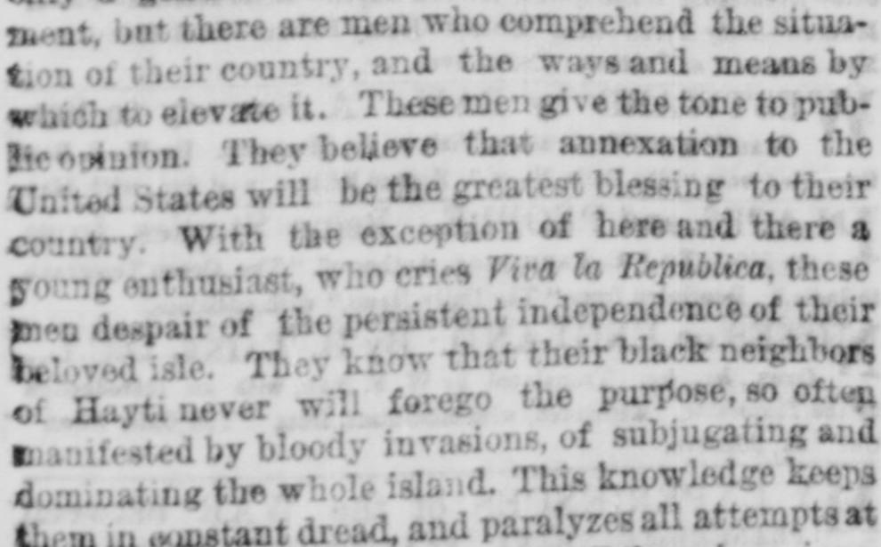
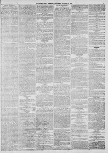

See the full pageVer la página completaThey know that their black neighbors forego the purpose, so oftenSaben que sus vecinos negros renuncian al propósito, tan a menudo
According to the New-York tribune on January 4, 1873, the Dominican Republic faces constant threats of invasion from Hayti, maintaining a costly army that paralyzes municipal rights, and fears being seized by Spain or another foreign power. These factors have led many Dominicans to desire annexation to the United States on terms of reciprocity following its victory over slavery. Additionally, the excerpt notes that the previous project by the American President and Congress to acquire possession of the Bay of Samana was ultimately defeated by Congress.De acuerdo con el New-York Tribune del 4 de enero de 1873, la República Dominicana afronta incesantes amenazas bélicas desde Haití, mantiene un ejército oneroso que cercena los derechos de los municipios y abriga el constante temor de caer presa de España o de otra potencia extranjera. Estos motivos han inducido a numerosos dominicanos a desear la anexión a los Estados Unidos sobre bases de reciprocidad tras la erradicación de la esclavitud en esa nación. El texto recuerda asimismo que el primitivo plan del presidente y del Congreso estadounidenses para adueñarse de la bahía de Samaná resultó finalmente desestimado por el legislativo.
FULL TEXT:TRADUCCIÓN:
SANTO DOMINGO.SANTO DOMINGO.
ANNEXATION IN A COMMERCIAL PHASE.LA ANEXIÓN EN UNA FASE COMERCIAL.
VIEWS OF DR. SAMUEL G. HOWE.OPINIONES DEL DR. SAMUEL G. HOWE.
What He Thinks of Santo Domingo—His Opinions Concerning the Haytians—Annexation Popular in Santo Domingo—The Great Commercial Enterprise.Lo que piensa de Santo Domingo—Sus opiniones concernientes a los haitianos—La anexión popular en Santo Domingo—La gran empresa comercial.
To the Editor of The Tribune.Al Editor de The Tribune.
SIR: The likings and preferences of different men for different parts of the earth are sometimes accounted for, sometimes not. A mountaineer loves his home with an exceeding love, because it is finite and comprehensible to his senses; the mountain is to him a thing apart from earth; it stands out against the sky; he can compass its foot, and can take in at a glance from its green and flowery base to its cold and snowy crown. The isles of the sea, you may love them as things having definite existence and form, and space and outline; you may sail around them; you may traverse them from shore to shore, and from the high points see all their contour. Not so with a vast continent; you cannot comprehend it; cannot make it a mental unit; while thinking of one part, you lose the thought of the rest.SEÑOR: Los gustos y preferencias de diferentes hombres por diferentes partes de la tierra a veces se explican, a veces no. Un montañés ama su hogar con un amor excesivo, porque es finito y comprensible para sus sentidos; la montaña es para él una cosa aparte de la tierra; se destaca contra el cielo; puede rodear su pie, y puede abarcar de un vistazo desde su base verde y florida hasta su corona fría y nevada. Las islas del mar, pueden amarse como cosas que tienen existencia y forma definidas, y espacio y contorno; pueden navegarse alrededor de ellas; pueden travesarse de costa a costa, y desde los puntos altos ver todo su contorno. No así con un vasto continente; no puede comprenderse; no puede hacerse una unidad mental; mientras se piensa en una parte, se pierde el pensamiento del resto.
Most men love the islands of the West Indies for their gorgeous tropical beauty, the like of which has not been seen; his eyes have not seen the earth's glory of the Lord. I love them for their delicious climate; their soft winds coming fresh from the sea every morning, and after fanning the mountains going out again at night as cool land breezes. I love them for their clear and ever-flowing brooks; their ever flowers; their ever crystal seas. They are the Eden of the earth, which the choicest races of men in the fullness of time shall possess and regard as paradise.La mayoría de los hombres aman las islas de las Indias Occidentales por su magnífica belleza tropical, como no se ha visto otra; sus ojos no han visto la gloria terrenal del Señor. Yo las amo por su delicioso clima; sus suaves vientos que vienen frescos del mar cada mañana, y después de abanicar las montañas salen de nuevo en la noche como frescas brisas terrestres. Las amo por sus claros y siempre fluyentes arroyos; sus flores eternas; sus mares de eterno cristal. Son el Edén de la tierra, que las razas más escogidas de los hombres en la plenitud del tiempo poseerán y considerarán como paraíso.
Especially do I love Hayti, the mountainous, the queen of the Antilles, whose natural beauties and advantages distinguish her even among the beautiful grouped around. I take deep interest in the condition and fate of the two peoples who to-day divide her territory between them. The western end, the seat of the negro republic, is a land of rare beauty, marvelous fertility, varied production, notwithstanding the dreadful insalubrity of its seaboard; well fitted for the black man to try the experiment of self-government, and maintain the independence so gallantly won by his ancestors. It is sadly true that during the half century of that independence very little progress has been made toward civilization, even in the seaport towns, and that barbarous superstition and pagan sacrifices prevail in the interior among negroes as uncivilized as those of central Africa. Well did Frederick Douglass exclaim after a short sojourn at Port-au-Prince: "Alas! is this all that my fellow-men of color can accomplish?"Especialmente amo a Haití, la montañosa, la reina de las Antillas, cuyas bellezas y ventajas naturales la distinguen aun entre las hermosas agrupadas alrededor. Tomo profundo interés en la condición y el destino de los dos pueblos que hoy dividen su territorio entre ellos. El extremo occidental, el asiento de la república negra, es una tierra de rara belleza, maravillosa fertilidad, variada producción, no obstante la terrible insalubridad de su litoral; bien apta para que el hombre negro pruebe el experimento del autogobierno, y mantenga la independencia tan gallardamente ganada por sus antepasados. Es tristemente verdad que durante el medio siglo de esa independencia se ha hecho muy poco progreso hacia la civilización, aun en los pueblos portuarios, y que la superstición bárbara y los sacrificios paganos prevalecen en el interior entre negros tan incivilizados como los del África central. Bien exclamó Frederick Douglass después de una corta estancia en Puerto Príncipe: «¡Ay! ¿es esto todo lo que mis semejantes de color pueden lograr?»
It may be, perhaps, that the black races cannot originate a new and high civilization of their own; but they can certainly imitate and carry on a civilization originated by others. But there is much in the history of Hayti to account for its present wretched condition; and there are men among Haytians who would honor any people. The French slave system was more horrid and debasing than the Spanish, which prevailed at the eastern end; and during its domination in Hayti the slaves became brutalized. Their long, bloody war for freedom was full of horrible atrocities on either side that further brutalized them. Then, after gaining their independence, they adopted the fatal policy of national isolation. They drove away most of the whites, and have continued to keep them out; they deny to them ownership of land and the right of full citizenship. Thus they have attempted to found and conduct a republic upon the narrow basis of race. Their friends abroad have sustained them in this foolish policy, and the end is the establishment of a conservative and odious aristocracy in the State, which sustains itself by a reign of terror.Puede ser, quizás, que las razas negras no puedan originar una civilización nueva y alta propia; pero ciertamente pueden imitar y continuar una civilización originada por otros. Pero hay mucho en la historia de Haití que explique su presente miserable condición; y hay hombres entre los haitianos que honrarían a cualquier pueblo. El sistema esclavista francés fue más horrendo y degradante que el español, que prevaleció en el extremo oriental; y durante su dominación en Haití los esclavos se brutalizaron. Su larga y sangrienta guerra por la libertad estuvo llena de horribles atrocidades en ambos lados que los brutalizó aún más. Entonces, después de ganar su independencia, adoptaron la fatal política del aislamiento nacional. Expulsaron a la mayoría de los blancos, y han continuado manteniéndolos fuera; les niegan la propiedad de la tierra y el derecho de plena ciudadanía. Así han intentado fundar y conducir una república sobre la estrecha base de la raza. Sus amigos en el extranjero los han sostenido en esta política insensata, y el fin es el establecimiento de una aristocracia conservadora y odiosa en el Estado, que se sostiene por un reinado de terror.
But in spite of all this, we must give the black man all the aid and comfort we can, and say heartily: Vive la Republique d'Haiti, quand meme! I believe that the best way to help the Haytian is to set in his immediate neighborhood, over the mountain border, the flag of our Union, and carry thither our political and social institutions, our arts and our agriculture, that he may see them, imitate them, and profit by them. I know of no better way than to profit by the one which is now open, and obtain the right to say peace shall be kept in these regions, and they shall be opened to the peaceful spread of our commerce and our institutions.Pero a pesar de todo esto, debemos dar al hombre negro toda la ayuda y consuelo que podamos, y decir de corazón: Vive la Republique d'Haiti, quand meme! Creo que la mejor manera de ayudar al haitiano es colocar en su vecindad inmediata, tras la frontera montañosa, la bandera de nuestra Unión, y llevar allí nuestras instituciones políticas y sociales, nuestras artes y nuestra agricultura, para que pueda verlas, imitarlas, y aprovecharse de ellas. No conozco mejor manera que aprovechar la que ahora está abierta, y obtener el derecho de decir que la paz se mantendrá en estas regiones, y que serán abiertas a la propagación pacífica de nuestro comercio y nuestras instituciones.
It is for this end that I have labored, and shall labor, for the annexation of the eastern (Spanish) end of the island, now occupied by the Republic of Santo Domingo. This country is far more favored in felicitous geographical position, and salubrity of climate; is well adapted for the residence of white men, and for varied agricultural and industrial pursuits. It lies to windward, and the trade winds, drawing through the valleys between the two mountain ranges which traverse it from east to west, deposit their moisture, which is condensed on these mountains, keeping everything green to their very summits, and trickling down in constant rills and brooks. But by the time the trade winds reach the cross range which, running from north to south, separates the two republics, they have become dry and hot, and bring neither moisture nor coolness to the western end; hence proceed mainly the salubrity of the former and the insalubrity of the latter region.Es con este fin que he trabajado, y trabajaré, por la anexión del extremo oriental (español) de la isla, ahora ocupado por la República de Santo Domingo. Este país está mucho más favorecido en posición geográfica feliz, y salubridad de clima; está bien adaptado para la residencia de hombres blancos, y para variados menesteres agrícolas e industriales. Yace a barlovento, y los vientos alisios, pasando por los valles entre las dos cordilleras que lo atraviesan de este a oeste, depositan su humedad, que se condensa en estas montañas, manteniendo todo verde hasta sus mismas cumbres, y filtrándose en constantes arroyuelos y riachuelos. Pero para cuando los vientos alisios alcanzan la cordillera transversal que, corriendo de norte a sur, separa las dos repúblicas, se han vuelto secos y calientes, y no traen ni humedad ni frescura al extremo occidental; de ahí proceden principalmente la salubridad de la primera y la insalubridad de la última región.
Santo Domingo has been still more favored than Hayti in respect to its civil and political conditions. Its inhabitants were a mixed race of Spanish, Indian, and blacks, who live together on terms of equality; they fought side by side in the wars for driving out the Haytians and other invaders, and have a common and strong feeling of nationality. The Spaniards, during their long domination, maintained a mild form of slavery over the blacks; but with their usual liberality they accorded to the inhabitants considerable municipal rights and privileges. Hence, instead of the barbarism and the heathen practices which prevail in the interior of Hayti, we find throughout that of Santo Domingo a gentle and peaceful people, living in villages and observing the customs of civilized life. We find regular civil institutions, with civil magistrates chosen by the people; we find property pretty equally divided, and regular registries of titles, births, deaths, and the like. We find in almost every village well-bred and well-mannered men, speaking Spanish and French, and showing considerable intelligence. We find everywhere a tolerant and democratic spirit. There is not a general desire for education and improvement; but there are men who comprehend the situation of their country, and the ways and means by which to elevate it. These men give the tone to public opinion. They believe that annexation to the United States will be the greatest blessing to their country.Santo Domingo ha sido aún más favorecido que Haití en cuanto a sus condiciones civiles y políticas. Sus habitantes eran una raza mezclada de españoles, indios, y negros, que viven juntos en términos de igualdad; lucharon lado a lado en las guerras para expulsar a los haitianos y otros invasores, y tienen un sentimiento común y fuerte de nacionalidad. Los españoles, durante su larga dominación, mantuvieron una forma suave de esclavitud sobre los negros; pero con su liberalidad usual acordaron a los habitantes considerables derechos y privilegios municipales. De ahí que, en lugar del barbarismo y las prácticas paganas que prevalecen en el interior de Haití, encontramos en todo el de Santo Domingo un pueblo gentil y pacífico, viviendo en aldeas y observando las costumbres de la vida civilizada. Encontramos instituciones civiles regulares, con magistrados civiles elegidos por el pueblo; encontramos la propiedad bastante igualmente dividida, y registros regulares de títulos, nacimientos, defunciones, y similares. Encontramos en casi cada aldea hombres bien criados y de buenos modales, que hablan español y francés, y muestran considerable inteligencia. Encontramos en todas partes un espíritu tolerante y democrático. No hay un deseo general por la educación y el mejoramiento; pero hay hombres que comprenden la situación de su país, y las vías y medios para elevarlo. Estos hombres dan el tono a la opinión pública. Creen que la anexión a los Estados Unidos será la mayor bendición para su país.
With the exception of here and there an enthusiast, who cries Viva la Republica, these men despair of the persistent independence of their own isle. They know that their black neighbors of Hayti never will forego the purpose, so often manifested by bloody invasions, of subjugating and dominating the whole island. This knowledge keeps them in constant dread, and paralyzes all attempts at self-improvement. To ward off these invasions the government maintains an army which keeps all the young men from work, and fits them for plunderers of the peasantry. The Government is too feeble to repel foreign invasions, and hence the apprehensions of their island being again seized upon by Spain, or some other foreign power.Con la excepción de algún entusiasta aquí y allá, que grita Viva la Republica, estos hombres desesperan de la independencia persistente de su propia isla. Saben que sus vecinos negros de Haití nunca abandonarán el propósito, tan a menudo manifestado por sangrientas invasiones, de subyugar y dominar toda la isla. Este conocimiento los mantiene en constante temor, y paraliza todo intento de superación personal. Para repeler estas invasiones el gobierno mantiene un ejército que mantiene a todos los jóvenes alejados del trabajo, y los dispone como saqueadores del campesinado. El Gobierno es demasiado débil para repeler invasiones extranjeras, y de ahí las aprensiones de que su isla sea de nuevo tomada por España, o alguna otra potencia extranjera.
These and other causes have made many Dominicans look to some foreign power which would not accord them, as Spain did, "the protection which vultures give to lambs, covering and devouring them," but aid upon equal terms of reciprocity. Since our victory over Slavery, the desire for annexation to our country has become unanimous and intense among the Dominican people. I have seen proofs enough of this fact. I saw it plainly on my official visit as Commissioner two years ago; I saw them more plainly still during a more protracted residence among the Dominicans last winter. Their best men unceasingly use their influence toward bringing about a measure to which they look as their surest guarantee of freedom, safety and prosperity.Estas y otras causas han hecho que muchos dominicanos busquen alguna potencia extranjera que no les acordaría, como hizo España, «la protección que los buitres dan a los corderos, cubriéndolos y devorándolos», sino ayuda en términos iguales de reciprocidad. Desde nuestra victoria sobre la Esclavitud, el deseo de anexión a nuestro país se ha vuelto unánime e intenso entre el pueblo dominicano. He visto pruebas suficientes de este hecho. Lo vi claramente en mi visita oficial como Comisionado hace dos años; lo vi aún más claramente durante una residencia más prolongada entre los dominicanos el invierno pasado. Sus mejores hombres usan incesantemente su influencia para lograr una medida a la que miran como su más segura garantía de libertad, seguridad y prosperidad.
I am more and more convinced of the truth contained in the first Presidential message upon the subject of annexation to the United States: would be a furtherance of the Monroe doctrine; that it is a national protection, asserting our just and controlling influence over the great commercial traffic soon to flow from east to west by way of the Isthmus of Darien; build up our merchant marine, furnish new markets for the products of our farms, shops and manufactories; make slavery insupportable in Cuba and Porto Rico at once, and ultimately in Brazil; and settle the unhappy condition of Cuba and its exterminating conflict; and therefore I have labored in season and out of season to bring about annexation in some shape.Estoy cada vez más convencido de la verdad contenida en el primer mensaje Presidencial sobre el tema de la anexión a los Estados Unidos: sería un fomento de la doctrina Monroe; que es una protección nacional, que afirma nuestra justa y controladora influencia sobre el gran tráfico comercial que pronto fluirá de este a oeste por vía del Istmo de Darién; levantaría nuestra marina mercante, proporcionaría nuevos mercados para los productos de nuestras granjas, talleres y manufacturas; haría la esclavitud insoportable en Cuba y Puerto Rico de inmediato, y en última instancia en Brasil; y resolvería la infeliz condición de Cuba y su conflicto exterminador; y por tanto he trabajado en tiempo y fuera de tiempo para lograr la anexión en alguna forma.
It will rather thwart the one proposed by him, and therefore it is hoped that it will escape the vehement invectives and abuse heaped upon that. It is not a political measure, and cannot excite well-founded political opposition. There may be some who will oppose it in the supposed interest of the dominant party in Hayti, which continually aims at possession of the whole island, and means by force if it can.Más bien frustrará la propuesta por él, y por tanto se espera que escape de las vehementes invectivas y abusos amontonados sobre aquella. No es una medida política, y no puede excitar oposición política bien fundada. Puede haber algunos que se opongan a ella en el supuesto interés del partido dominante en Haití, que continuamente aspira a la posesión de toda la isla, y lo pretende por la fuerza si puede.
It is a great commercial enterprise, undertaken by men of wealth and energy; and whether it yields them the rich returns they look for or not, it will open the vast resources of Santo Domingo, and establish between it and this country relations advantageous to both.Es una gran empresa comercial, emprendida por hombres de riqueza y energía; y rinda o no los ricos rendimientos que esperan, abrirá los vastos recursos de Santo Domingo, y establecerá entre él y este país relaciones ventajosas para ambos.
Yours, &c.,Suyo, etc.,
SAMUEL G. HOWE.SAMUEL G. HOWE.
Boston, Jan. 1, 1873.Boston, 1 de enero de 1873.
[Editor's note: the paper writes of the east as part of Hayti. From 1822 to 1844 the Dominican Republic was held by Haitian military occupation, against its people's will; it restored its independence on February 27, 1844.][Nota del editor: el periódico habla del este como parte de Haití. De 1822 a 1844 la República Dominicana estuvo bajo ocupación militar haitiana, contra la voluntad de su pueblo; restauró su independencia el 27 de febrero de 1844.]
New-York Tribune. New York, January 4, 1873.
See the original at the Library of CongressVer el original en la Biblioteca del Congreso
Published by: New York Tribune, 1866-1924.Publicado por: New York Tribune, 1866-1924.
Edition: Edition 1Edición: edición 1
Page: 5Página: 5
Frequency: daily (1866–1924)Frecuencia: diario (1866–1924)
Collection: Chronicling America, Library of CongressColección: Chronicling America, de la Biblioteca del Congreso
LCCN: sn83030214LCCN: sn83030214
ISSN: 1941-0646ISSN: 1941-0646
OCLC: 9405688OCLC: 9405688
Rights: public domain, according to the Library of CongressDerechos: dominio público, según la Biblioteca del Congreso